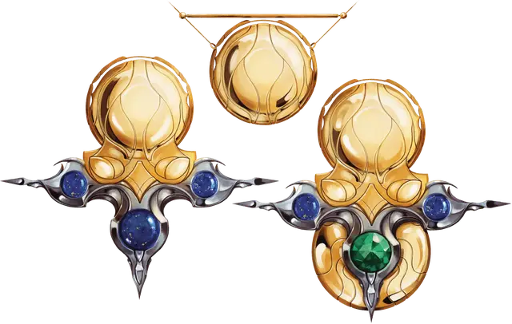

Драгоценность трёх молитв
Jewel of Three Prayers
Чудесный предмет, легендарный (требуется настройка)

Рекомендованная стоимость от 50 001 зм
Драгоценность трёх молитв - это Отголосок Дивергенции (см. Развитие Отголосков Дивергенции). В древние времена Алексиан «Апофеон» носил этот амулет как символ своего союза с тремя Главными Божествами: Сеханин «Лунной Прядильщицей», Авандрой «Вестницей Перемен» и Кореллоном «Прародителем».
Когда драгоценность обнаруживается, то только сила Сеханин пульсирует в его дремлющем сердце. Сила двух других божеств ждёт, чтобы ее пробудил герой — или герои — которые могут пойти по стопам Алексиана.
Дремлющий. В данном состоянии драгоценность трёх молитв представляет собой сверкающий золотой диск, прикрепленный к тонкой золотой цепочке. Цепочка волшебным образом изменяет свой размера, чтобы стать ожерельем для существа, которое ее носит.
Дремлющая драгоценность обладает следующими свойствами:
- Вы получаете бонус +1 к КД, пока носите драгоценность;
- Пока вы носите или держите драгоценность, вы можете действием заставить его излучать яркий свет в радиусе 15 футов и тусклый свет еще на 15 футов. Свет горит до тех пор, пока вы его не погасите (никаких действий не требуется);
- Драгоценность имеет 3 заряда и восстанавливает все израсходованные заряды ежедневно на рассвете. Держа драгоценный камень, вы можете израсходовать 1 заряд , чтобы наложить заклинание невидимость [invisibility].
Пробуждённый. В этом состоянии драгоценность получает благословение Авандры «Вестницей Перемен». Из центра драгоценности, как бутоны цветов, раскрывающихся весной, появляются три изящных шпиля. Три лазуритовых камня покоятся на этих шпилях, как капли росы.
Улучшаются следующие свойства драгоценности:
- Бонус, который драгоценность даёт вашему КД, увеличивается до +2;
- Количество его зарядов увеличивается до 5.
Драгоценность приобретает следующие дополнительные свойства, которые вы можете использовать, когда носите или держите его в руках:
- Вы можете израсходовать 1 заряд драгоценности (никаких действий не требуется), чтобы окончить на себе одно из следующих состояний: схваченный, парализованный или опутанный;
- Когда другое существо, которое вы видите в пределах 60 футов, проваливает спасбросок, вы можете реакцией израсходовать 1 заряд драгоценности, чтобы позволить этому существу повторить спасбросок, потенциально превратив неудачу в успех. Существо должно использовать результат нового броска.
Возвышенный. В этом состоянии драгоценность получает благословение Кореллона «Прародителем». На драгоценном камне появляется сверкающий изумруд, окруженный золотым ореолом.
Улучшаются следующие свойства драгоценности:
- Бонус, который драгоценность даёт вашему КД, увеличивается до +3;
- Количество его зарядов увеличивается до 7.
Драгоценность приобретает следующие дополнительные свойства, которые вы можете использовать, когда носите или держите его в руках:
- Вы обретаете способность дышать под водой и получаете скорость плавания, равную вашей скорости ходьбы;
- Каждый из ваших союзников в пределах 30 футов от вас получает способность дышать под водой и получает скорость плавания, равную его скорости ходьбы;
- Бонусным действием вы можете потратить 1 заряд драгоценности, чтобы нацелиться на себя или на одно согласное существо, которое вы можете видеть в пределах 15 футов. Цель телепортируется в свободное пространство по вашему выбору в пределах 15 футов от вас вместе с любым снаряжением, которое она носит или несёт. Цель появляется во вспышке золотого сияния, и каждое выбранное вами существо в пределах 5 футов от нового местоположения цели должно совершить спасбросок Телосложения Сл 18. При провале существо получает 4к10 урона излучением и становится ослеплённым до начала вашего следующего хода. В случае успеха существо получает половину этого урона и не ослепляется.